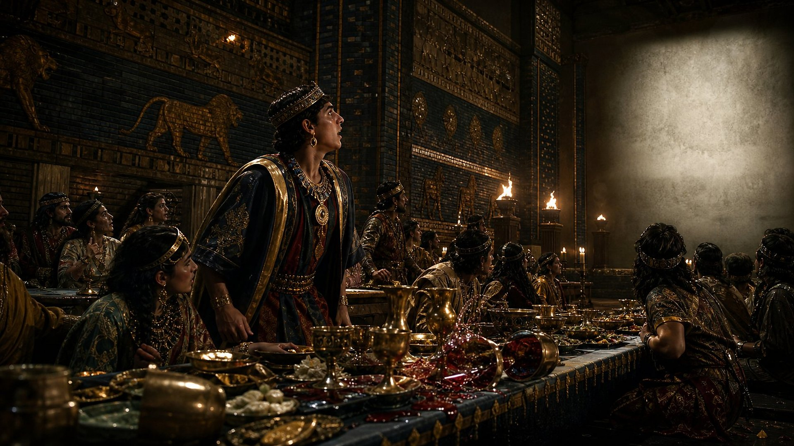
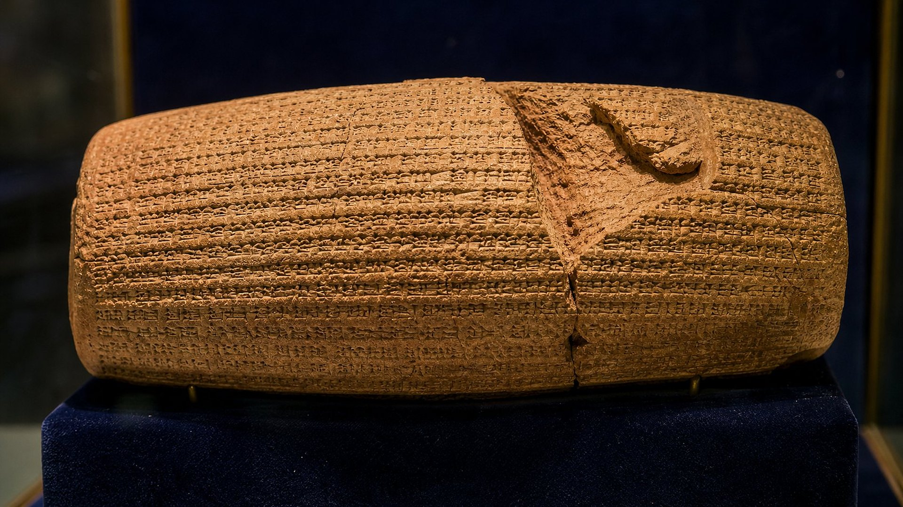
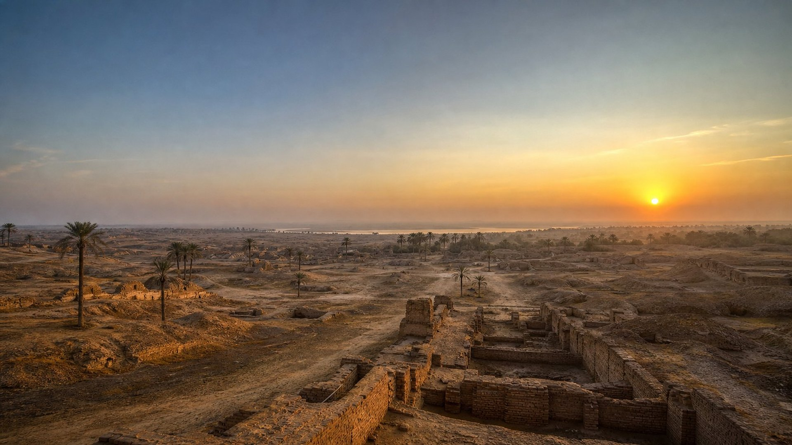

Cylindre de Cyrus
Trouvé à Babylone en 1879 (H. Rassam). Récit babylonien de la prise de la ville par Cyrus et de sa politique de restauration des cultes et des populations déplacées.
Notice de référence (site externe)Salle 02 sur 17
Un roi perse nommé, un fleuve détourné, des portes laissées ouvertes : la nuit où Babylone tomba.
Statut : ACCOMPLIE
L’annonce · vers 732 av. n. è.
Au VIIIe siècle avant notre ère, Babylone n’est pas encore la maîtresse du monde : c’est l’Assyrie qui domine. Le livre d’Isaïe annonce pourtant que Babylone tombera, et il nomme celui qui la prendra : Cyrus.
L’annonce ne s’arrête pas là. Elle précise comment la ville sera prise : ses eaux protectrices seront asséchées, ses portes resteront ouvertes. Elle annonce aussi ce que fera le conquérant : laisser repartir les captifs et ordonner la reconstruction de Jérusalem et de son temple.
Le livre d’Isaïe est achevé vers 732 av. n. è. Cyrus, lui, naît plus d’un siècle après. En 539, il prend Babylone.
[moi] qui dis à l’abîme: Sois sec, et je dessécherai tes fleuves ;
qui dis de Cyrus: [Il est] mon berger, et il accomplira tout mon bon plaisir, disant à Jérusalem: Tu seras bâtie, et au temple: Tes fondements seront posés.
Ainsi dit Jéhovah à son oint, à Cyrus, dont j’ai tenu la droite pour soumettre devant lui des nations;… et je délierai les reins des rois, pour ouvrir les deux battants devant lui afin que les portes ne soient pas fermées:
Écart annonce → accomplissement
Faites glisser le curseur pour remonter le temps, de la rédaction d’Isaïe jusqu’au retour des exilés.
Annoncé · accompli
Une prophétie vague se réalise toujours un peu. Celle-ci donne des détails précis : chacun peut être confronté aux sources anciennes et aux objets conservés dans les musées.
Détail 1
« … qui dis de Cyrus: [Il est] mon berger, et il accomplira tout mon bon plaisir, disant à Jérusalem: Tu seras bâtie, et au temple: Tes fondements seront posés. »
Détail 2
« [moi] qui dis à l’abîme: Sois sec, et je dessécherai tes fleuves … »
Détail 3
« Ainsi dit Jéhovah à son oint, à Cyrus, dont j’ai tenu la droite pour soumettre devant lui des nations;… et je délierai les reins des rois, pour ouvrir les deux battants devant lui afin que les portes ne soient pas fermées … »
Détail 4
« Les hommes forts de Babylone ont cessé de combattre, ils sont assis dans les places fortes ; leur force est épuisée, ils sont comme des femmes ; on a mis le feu à leurs demeures, leurs barres sont brisées. »
Ce qui s’est passé
La chronique note une prise de la ville « sans combat ».
Niveau de preuve : FAIT ARCHÉOLOGIQUE Preuves : PR-002
Détail 5
« Pérès: Ton royaume est divisé, et donné aux Mèdes et aux Perses. »
Détail 6
« Elle ne sera jamais habitée, et on n’y demeurera pas, de génération en génération, et l’Arabe n’y dressera pas sa tente, et les bergers n’y feront pas reposer [leurs troupeaux] … »
Ce qui s’est passé
Déclin progressif, abandon complet ; aujourd’hui champ de ruines protégé.
Niveau de preuve : FAIT ARCHÉOLOGIQUE Preuves : PR-006
Octobre 539 av. n. è.

À l’automne 539, l’armée de Cyrus a déjà battu les Babyloniens et pris la ville de Sippar. Le roi Nabonide s’est enfui. À Babylone, son fils Belshatsar gouverne à sa place.
Le livre de Daniel raconte que, cette nuit-là, Belshatsar offre un grand festin à mille de ses nobles. On y boit dans les coupes d’or prises autrefois au temple de Jérusalem. Une main apparaît et écrit sur le mur ; Daniel en donne le sens : le royaume est donné aux Mèdes et aux Perses. La même nuit, Belshatsar est tué.
Les historiens grecs Hérodote et Xénophon rapportent eux aussi que la ville fut surprise en pleine fête. La chronique babylonienne de Nabonide, gravée sur une tablette d’argile, note sobrement que l’armée de Cyrus entra dans Babylone « sans combat ».
Pérès: Ton royaume est divisé, et donné aux Mèdes et aux Perses.
En cette nuit-là, Belshatsar, roi des Chaldéens, fut tué.
Pendant longtemps, aucun texte babylonien connu ne mentionnait Belshatsar : les listes royales donnaient Nabonide comme dernier roi de Babylone. Certains critiques y voyaient la preuve que le livre de Daniel se trompait.
Au XIXe siècle, des cylindres d’argile découverts à Ur ont livré une prière de Nabonide pour « Belshatsar, son fils aîné ». D’autres textes montrent que Nabonide lui avait confié la royauté pendant ses longues années d’absence. Ce détail éclaire aussi le récit : Belshatsar promet à Daniel la place de « troisième » dans le royaume, car la première revenait à Nabonide et la deuxième à lui-même.
Niveau de preuve : FAIT ARCHÉOLOGIQUE Voir la pièce PR-003
Carte animée
L’Euphrate traversait Babylone et servait de défense. Suivez, étape par étape, comment il est devenu le chemin des assaillants.
Dossier
Inscriptions royales, chroniques, récits d’historiens, manuscrits : les témoins de la chute de Babylone et de l’ancienneté de l’annonce.

Découvert à Babylone en 1879, ce cylindre d’argile rédigé en akkadien raconte la prise de la ville du point de vue du vainqueur. Cyrus s’y présente comme un libérateur et affirme avoir rendu leurs sanctuaires aux peuples déportés et leur avoir permis de rentrer chez eux.
Le texte ne nomme pas les Juifs, mais il décrit exactement la politique que rapporte le livre d’Esdras : la permission de rentrer et de rebâtir le temple de Jérusalem.
Trouvé à Babylone en 1879 (H. Rassam). Récit babylonien de la prise de la ville par Cyrus et de sa politique de restauration des cultes et des populations déplacées.
Notice de référence (site externe)Rapporte l’entrée de l’armée de Cyrus dans Babylone « sans combat » en 539 et l’absence prolongée du roi Nabonide (le prince héritier gouverne).
Notice de référence (site externe)Prière de Nabonide pour « Bel-shar-usur, mon fils aîné » : l’existence de Belshatsar (Daniel 5), longtemps mise en doute, est attestée.
Notice de référence (site externe)Cyrus détourne l’Euphrate ; ses soldats entrent par le lit du fleuve pendant une fête, alors que le centre de la ville l’ignore encore.
Notice de référence (site externe)Détournement du fleuve, entrée de nuit pendant une fête, portes du palais ouvertes, mort du roi.
Notice de référence (site externe)Champ de ruines à 85 km au sud de Bagdad ; seule une petite partie est fouillée. La ville antique n’a jamais retrouvé de population.
Notice de référence (site externe)Les 66 chapitres d’Isaïe, y compris les passages qui nomment Cyrus (44:28 ; 45:1), sont attestés au moins deux siècles avant notre ère, quasi identiques au texte massorétique.
Notice de référence (site externe)538-537 av. n. è.
Isaïe n’annonçait pas seulement la chute de Babylone. Il précisait que Cyrus libérerait les captifs « sans prix et sans présent » et donnerait l’ordre de reconstruire Jérusalem.
C’est ce qui se produit : dès la première année de son règne sur Babylone, Cyrus publie un décret autorisant les Juifs à rentrer dans leur pays et à rebâtir le temple. Des milliers d’exilés reprennent la route et, en 537 av. n. è., ils sont de retour sur leur terre.
Un conquérant qui renvoie chez eux les peuples déportés : c’était, pour l’époque, une politique inhabituelle. C’était pourtant exactement ce qui avait été écrit.
Moi, je l’ai suscité en justice, et je rendrai droites toutes ses voies: lui, bâtira ma ville, et renverra libres mes captifs, sans prix et sans présent, dit Jéhovah des armées.
Et la première année de Cyrus, roi de Perse, afin que fût accomplie la parole de Jéhovah [dite] par la bouche de Jérémie, Jéhovah réveilla l’esprit de Cyrus, roi de Perse ; et il fit une proclamation dans tout son royaume, et la publia aussi par écrit, disant: Ainsi dit Cyrus, roi de Perse: Jéhovah, le Dieu des cieux, m’a donné tous les royaumes de la terre, et il m’a chargé de lui bâtir une maison à Jérusalem, qui est en Juda.
Détail n° 6

Babylone n’a pas disparu en une nuit. Sous les Perses, puis sous Alexandre et ses successeurs, elle reste une ville importante. Mais la fondation de Séleucie, sur le Tigre, vers 305 av. n. è., attire peu à peu ses habitants.
Au début de notre ère, le géographe grec Strabon la décrit déjà comme en grande partie déserte. La ville s’efface ensuite complètement. Les reconstructions partielles du XXe siècle n’en ont pas refait une ville habitée.
Aujourd’hui, le site est un champ de ruines, inscrit au patrimoine mondial en 2019. On le visite ; on n’y habite pas.
Et Babylone, l’ornement des royaumes, la gloire de l’orgueil des Chaldéens, sera comme quand Dieu renversa Sodome et Gomorrhe.
Elle ne sera jamais habitée, et on n’y demeurera pas, de génération en génération, et l’Arabe n’y dressera pas sa tente, et les bergers n’y feront pas reposer [leurs troupeaux];
Questions fréquentes
Le rouleau de Qumrân prouve que le texte complet existait au iie s. av. n. è. La thèse d’un second auteur repose surtout sur le présupposé qu’une prédiction précise est impossible ; le livre se présente comme une seule œuvre, et les auteurs du ier siècle le citent sous le nom d’Isaïe.
Exact : la chute fut progressive (époques perse, séleucide). La prophétie annonçait l’issue finale ; la ville a fini déserte et n’a jamais été repeuplée comme cité.
Il ne prétend pas le faire ; il atteste en revanche une politique générale de retour des populations et des cultes, cohérente avec Esdras 1.